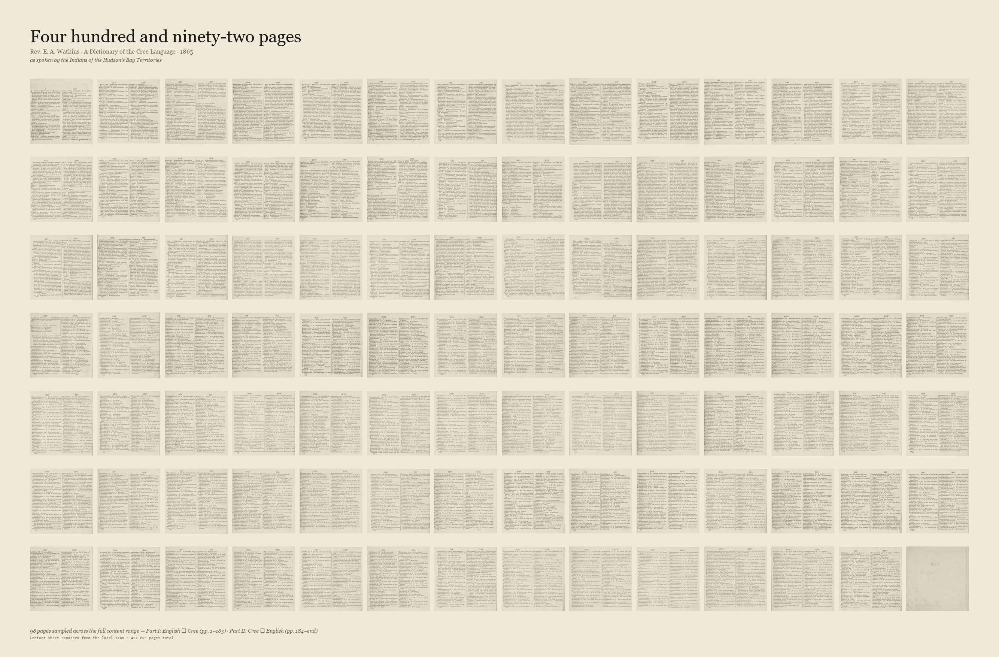
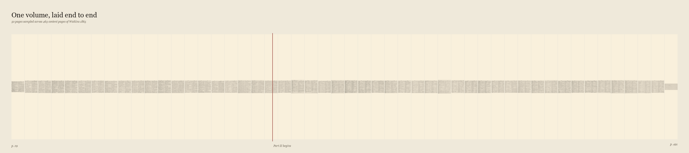
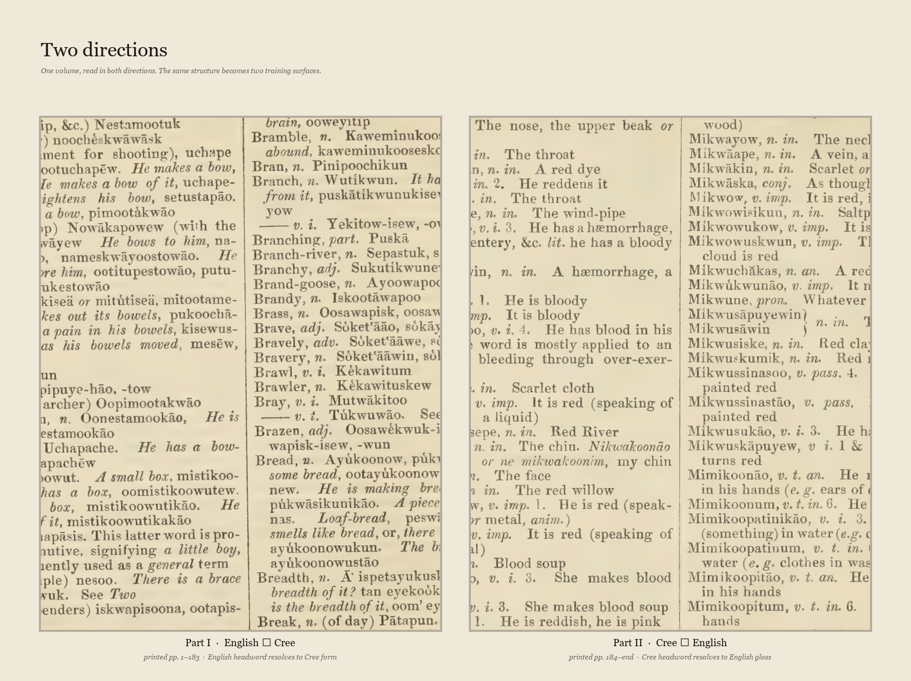
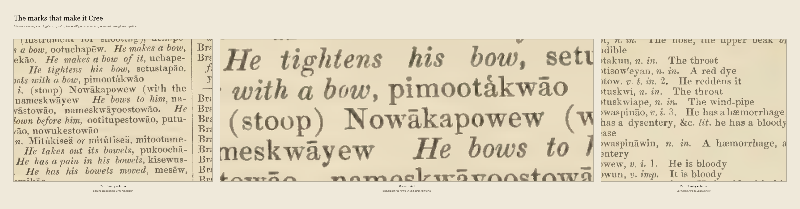

Every page below is real ink from the 1865 scan. No reconstruction, no synthetic fill. The contact sheet samples ninety-eight pages across the full content range — front matter through Part I (English to Cree) and Part II (Cree to English).
The point of showing this much paper is honesty about scale. One book is not a corpus. It is a bounded, inspectable, datable object — and that is exactly why it can serve as transparent supervision rather than opaque scrape.


Watkins arranged his dictionary bidirectionally. Part I runs English headword to Cree realization. Part II reverses: Cree headword to English gloss. The typographies differ — English roman type on the left, Cree forms with their diacritical marks on the right.
This is not incidental. The two directions become two training surfaces. The same source teaches the model both how to find a Cree word for an English meaning and how to gloss a Cree form back into English.

Watkins used his own missionary Roman orthography — not modern Standard Roman Orthography, and certainly not Cree syllabics. His marks include macrons for vowel length, circumflexes, hyphens joining morphemes, and apostrophes marking glottal stops.
These diacritical marks are the difference between a word that means one thing and a word that means another. The pipeline is designed to preserve them through extraction and reward them in training — not flatten them into ASCII.

An archival search across Internet Archive, Canadiana, the Hudson's Bay Company Archives, Library and Archives Canada, Peel's Prairie Provinces, and the CMS archive at Birmingham confirms what is publicly accessible and what is not.
Watkins' handwritten journals (1852–1863, sixty-seven items) survive at the Cadbury Research Library, University of Birmingham. They are not freely digitized. No confirmed photograph or portrait of Watkins exists in any public digital archive. The visual record is the book itself — and that is enough to begin.
The full inventory is preserved in archival-sources-watkins.md.
The old source is deliberate. It avoids collecting living speakers' language without consent and keeps provenance honest. The artifact is openly archival and does not impersonate contemporary Cree.
Old is safer on consent. It is not neutral, not correct, and does not by itself settle community authority over the derived weights.